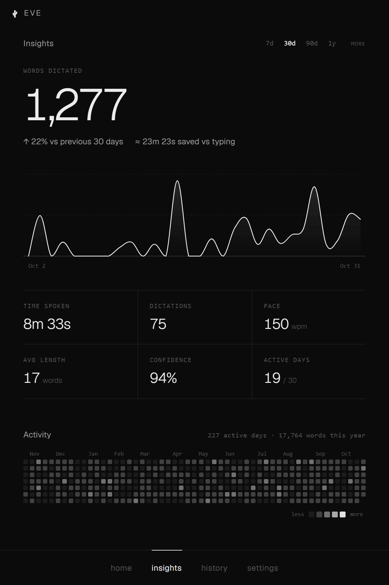
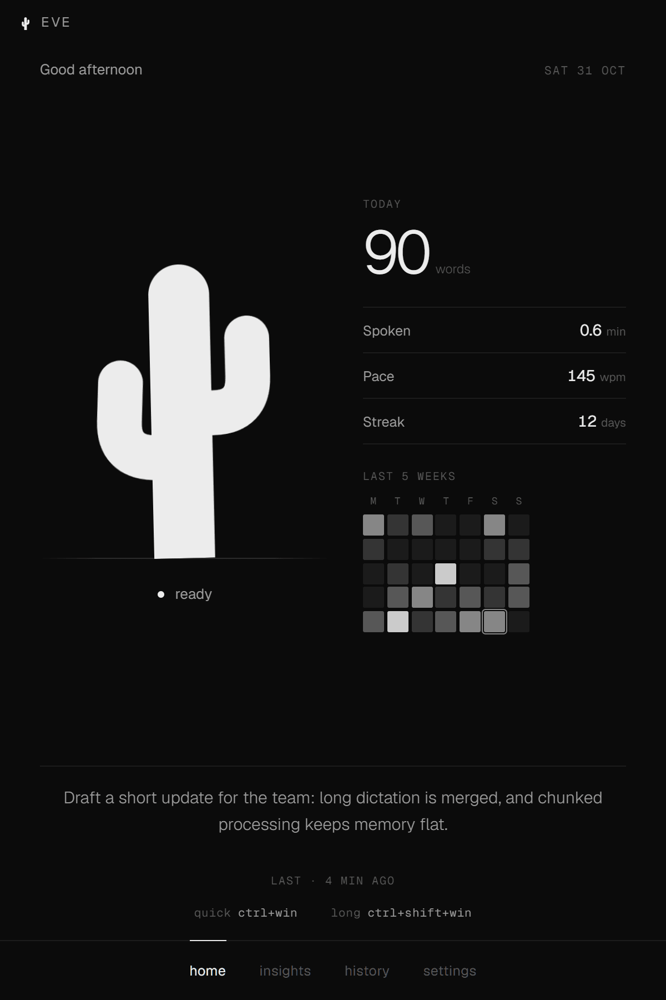
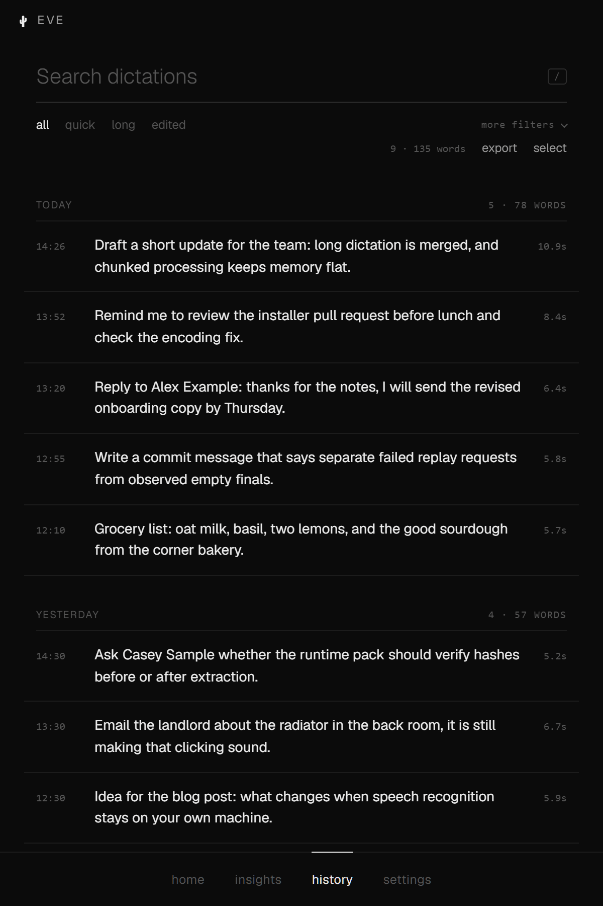
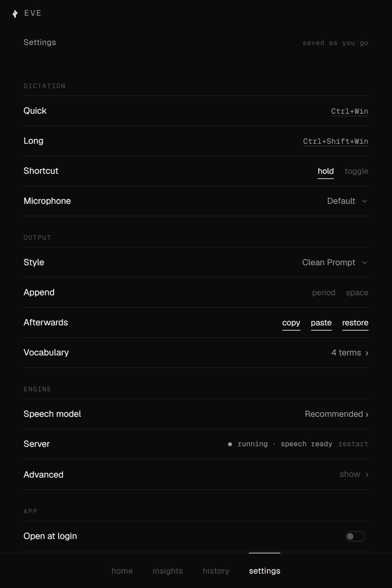

01
Two ways to talk.
Quick notes or long dictation, each on its own hotkey. Hold to talk, or switch to toggle.
Eve is a free, open-source dictation app for Windows. Hold a hotkey and speak. When you stop, the text is pasted into the active window. Speech recognition runs on your own machine.
v0.8.2-alpha.9 · alpha pre-release
01 · the pill
A small glass pill sits near the bottom of the screen. It widens and shows a timer while it hears you, then shrinks to a breathing dot in silence. It shows no transcript. When you stop, Eve transcribes and pastes the text once.
starting the session is opening.
listening the bead follows your voice, next to a timer.
quiet in silence it shrinks to a breathing dot.
long dictation tagged next to the timer.
transcribing long sessions show chunk progress.
done a word count, then it leaves.
warning a short reason, in red.
02 · the app




03 · insights
17,764
words this year
227
active days
150 wpm
speaking pace, 30 days
Illustration with demo data. Your numbers stay in a SQLite database on your machine.
04 · what it does
01
Quick notes or long dictation, each on its own hotkey. Hold to talk, or switch to toggle.
02
Long recordings spool to a temporary file and are transcribed in chunks, so memory use stays flat. The audio is deleted when the session ends.
03
Eve copies the text, pastes it into the active window, and can then restore your previous clipboard.
04
Paste exactly what you said with Raw Dictation, or let another output style tidy it with local, rule-based cleanup first.
05
Hotwords help Eve spell names, acronyms, and product terms correctly.
06
large-v3-turbo is recommended (about 1.5 GB), large-v3 (about 2.9 GB) is for maximum accuracy, and small (about 0.5 GB) suits lighter hardware. The current model keeps working while a new one downloads.
07
Eve works on the CPU. An optional NVIDIA CUDA pack, downloaded separately (about 495 MB) and verified by hash, speeds up transcription on supported GPUs.
05 · privacy
06 · install
Eve.Web.Setup.<version>.exe from GitHub Releases.
The small web installer downloads the app during setup, so stay online. It is unsigned, so Windows SmartScreen may ask you to confirm.
Open Eve and hold ctrlwin. The speech model downloads from Hugging Face the first time you use it.
This is an alpha pre-release. Expect rough edges and read the v0.8.2-alpha.9 release notes first. Checksums (SHA256SUMS.txt, SHA512SUMS.txt) are published with each release.
07 · faq
Yes. In the packaged app, speech recognition runs in a local service on your machine, and audio and transcripts are never uploaded. Eve still needs the network for downloads: the web installer payload, the speech model on first use, and the optional GPU pack if you install it.
There is no account and no telemetry. History and Insights live in a local SQLite database, normally under %APPDATA%\Eve. Long-dictation audio is temporary and is never written to History or logs. Copied diagnostics exclude logs, file paths, History, and transcript text, but review any report before you share it.
No. Eve runs on the CPU. The optional NVIDIA CUDA pack is a separate download of about 495 MB (about 771 MB installed), verified by hash, that you install from Settings. It needs a supported driver and enough GPU memory, and it has not been shown to work on every NVIDIA machine.
The Eve installer is unsigned, so Windows SmartScreen may ask you to confirm before it runs. Download it only from the project's GitHub Releases page. Each release publishes SHA256SUMS.txt and SHA512SUMS.txt so you can check the files.
Windows 10 or 11 on x86-64, at least 4 GB of RAM (8 GB or more recommended), and an internet connection for the web installer and the first model download. A September 2026 build candidate measured about 686 MB unpacked; allow more space for speech models and the optional GPU pack. The Microsoft Visual C++ Redistributable is required, and Eve links to the official installer when it is missing.
No. The small pill shows a timer and status, not a transcript. After you stop, Eve transcribes and pastes the text into the active window once. It can then restore your previous clipboard.
Eve v0.8.2-alpha.9 is an alpha pre-release, so expect rough edges. Its release notes say that automated tests and synthetic overlay checks do not establish real microphone dictation acceptance or clean-machine installer lifecycle acceptance. Eve is free and MIT licensed.